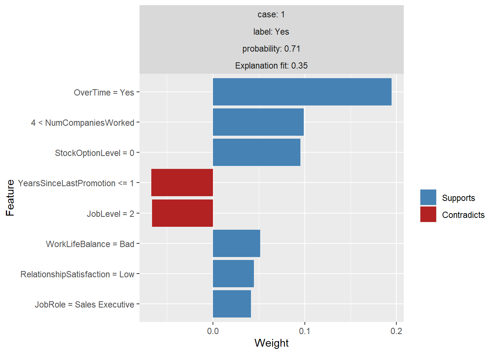

# Load Libraries
library(h2o)
library(rsample)
library(recipes)
library(readxl)
library(tidyverse)
library(tidyquant)
library(lime)
# Load Data
employee_attrition_tbl <- read_csv("raw_data/datasets-1067-1925-WA_Fn-UseC_-HR-Employee-Attrition.txt")
definitions_raw_tbl <- read_excel("Machine Learning Fundamentals data/data_definitions.xlsx", sheet = 1, col_names = FALSE)
# Processing Pipeline
source("Processing_PipeLine.R")## Rows: 1,470
## Columns: 35
## $ Age <dbl> 41, 49, 37, 33, 27, 32, 59, 30, 38, 36, 35...
## $ Attrition <fct> Yes, No, Yes, No, No, No, No, No, No, No, ...
## $ BusinessTravel <fct> Travel_Rarely, Travel_Frequently, Travel_R...
## $ DailyRate <dbl> 1102, 279, 1373, 1392, 591, 1005, 1324, 13...
## $ Department <fct> Sales, Research & Development, Research & ...
## $ DistanceFromHome <dbl> 1, 8, 2, 3, 2, 2, 3, 24, 23, 27, 16, 15, 2...
## $ Education <fct> College, Below College, College, Master, B...
## $ EducationField <fct> Life Sciences, Life Sciences, Other, Life ...
## $ EmployeeCount <dbl> 1, 1, 1, 1, 1, 1, 1, 1, 1, 1, 1, 1, 1, 1, ...
## $ EmployeeNumber <dbl> 1, 2, 4, 5, 7, 8, 10, 11, 12, 13, 14, 15, ...
## $ EnvironmentSatisfaction <fct> Medium, High, Very High, Very High, Low, V...
## $ Gender <fct> Female, Male, Male, Female, Male, Male, Fe...
## $ HourlyRate <dbl> 94, 61, 92, 56, 40, 79, 81, 67, 44, 94, 84...
## $ JobInvolvement <fct> High, Medium, Medium, High, High, High, Ve...
## $ JobLevel <dbl> 2, 2, 1, 1, 1, 1, 1, 1, 3, 2, 1, 2, 1, 1, ...
## $ JobRole <fct> Sales Executive, Research Scientist, Labor...
## $ JobSatisfaction <fct> Very High, Medium, High, High, Medium, Ver...
## $ MaritalStatus <fct> Single, Married, Single, Married, Married,...
## $ MonthlyIncome <dbl> 5993, 5130, 2090, 2909, 3468, 3068, 2670, ...
## $ MonthlyRate <dbl> 19479, 24907, 2396, 23159, 16632, 11864, 9...
## $ NumCompaniesWorked <dbl> 8, 1, 6, 1, 9, 0, 4, 1, 0, 6, 0, 0, 1, 0, ...
## $ Over18 <fct> Y, Y, Y, Y, Y, Y, Y, Y, Y, Y, Y, Y, Y, Y, ...
## $ OverTime <fct> Yes, No, Yes, Yes, No, No, Yes, No, No, No...
## $ PercentSalaryHike <dbl> 11, 23, 15, 11, 12, 13, 20, 22, 21, 13, 13...
## $ PerformanceRating <fct> Excellent, Outstanding, Excellent, Excelle...
## $ RelationshipSatisfaction <fct> Low, Very High, Medium, High, Very High, H...
## $ StandardHours <dbl> 80, 80, 80, 80, 80, 80, 80, 80, 80, 80, 80...
## $ StockOptionLevel <dbl> 0, 1, 0, 0, 1, 0, 3, 1, 0, 2, 1, 0, 1, 1, ...
## $ TotalWorkingYears <dbl> 8, 10, 7, 8, 6, 8, 12, 1, 10, 17, 6, 10, 5...
## $ TrainingTimesLastYear <dbl> 0, 3, 3, 3, 3, 2, 3, 2, 2, 3, 5, 3, 1, 2, ...
## $ WorkLifeBalance <fct> Bad, Better, Better, Better, Better, Good,...
## $ YearsAtCompany <dbl> 6, 10, 0, 8, 2, 7, 1, 1, 9, 7, 5, 9, 5, 2,...
## $ YearsInCurrentRole <dbl> 4, 7, 0, 7, 2, 7, 0, 0, 7, 7, 4, 5, 2, 2, ...
## $ YearsSinceLastPromotion <dbl> 0, 1, 0, 3, 2, 3, 0, 0, 1, 7, 0, 0, 4, 1, ...
## $ YearsWithCurrManager <dbl> 5, 7, 0, 0, 2, 6, 0, 0, 8, 7, 3, 8, 3, 2, ...employee_attrition_readable_tbl <- process_hr_data_readable(employee_attrition_tbl, definitions_raw_tbl)
# Test and Train
set.seed(seed = 1113)
split_obj <- rsample::initial_split(employee_attrition_readable_tbl, prop = 0.85)
# Assign training and test data
train_readable_tbl <- training(split_obj)
test_readable_tbl <- testing(split_obj)
# ML Preprocessing Recipe
recipe_obj <- recipe(Attrition ~ ., data = train_readable_tbl) %>%
step_zv(all_predictors()) %>%
step_mutate_at(c("JobLevel", "StockOptionLevel"), fn = as.factor) %>%
prep()
recipe_obj## Data Recipe
##
## Inputs:
##
## role #variables
## outcome 1
## predictor 34
##
## Training data contained 1250 data points and no missing data.
##
## Operations:
##
## Zero variance filter removed EmployeeCount, Over18, StandardHours [trained]
## Variable mutation for JobLevel, StockOptionLevel [trained]train_tbl <- bake(recipe_obj, new_data = train_readable_tbl)
test_tbl <- bake(recipe_obj, new_data = test_readable_tbl)
# Model
h2o.init()## Connection successful!
##
## R is connected to the H2O cluster:
## H2O cluster uptime: 4 days 2 hours
## H2O cluster timezone: Europe/Berlin
## H2O data parsing timezone: UTC
## H2O cluster version: 3.32.0.1
## H2O cluster version age: 2 months and 30 days
## H2O cluster name: H2O_started_from_R_Ahmed_Elkhateeb_hft524
## H2O cluster total nodes: 1
## H2O cluster total memory: 1.64 GB
## H2O cluster total cores: 4
## H2O cluster allowed cores: 4
## H2O cluster healthy: TRUE
## H2O Connection ip: localhost
## H2O Connection port: 54321
## H2O Connection proxy: NA
## H2O Internal Security: FALSE
## H2O API Extensions: Amazon S3, Algos, AutoML, Core V3, TargetEncoder, Core V4
## R Version: R version 4.0.3 (2020-10-10)automl_leader <- h2o.loadModel("03_ml_aut_files/h20_models/DeepLearning_grid__1_AutoML_20210108_180910_model_2")
automl_leader## Model Details:
## ==============
##
## H2OBinomialModel: deeplearning
## Model ID: DeepLearning_grid__1_AutoML_20210108_180910_model_2
## Status of Neuron Layers: predicting Attrition, 2-class classification, bernoulli distribution, CrossEntropy loss, 19,602 weights/biases, 242.0 KB, 8,587 training samples, mini-batch size 1
## layer units type dropout l1 l2 mean_rate rate_rms
## 1 1 95 Input 0.00 % NA NA NA NA
## 2 2 200 RectifierDropout 50.00 % 0.000000 0.000000 0.166861 0.376030
## 3 3 2 Softmax NA 0.000000 0.000000 0.000554 0.000181
## momentum mean_weight weight_rms mean_bias bias_rms
## 1 NA NA NA NA NA
## 2 0.000000 -0.002277 0.083428 0.481764 0.025722
## 3 0.000000 0.011297 0.399538 -0.000838 0.043929
##
##
## H2OBinomialMetrics: deeplearning
## ** Reported on training data. **
## ** Metrics reported on full training frame **
##
## MSE: 0.07534004
## RMSE: 0.2744814
## LogLoss: 0.2815909
## Mean Per-Class Error: 0.2006076
## AUC: 0.8830095
## AUCPR: 0.7495602
## Gini: 0.7660191
##
## Confusion Matrix (vertical: actual; across: predicted) for F1-optimal threshold:
## No Yes Error Rate
## No 851 40 0.044893 =40/891
## Yes 62 112 0.356322 =62/174
## Totals 913 152 0.095775 =102/1065
##
## Maximum Metrics: Maximum metrics at their respective thresholds
## metric threshold value idx
## 1 max f1 0.370729 0.687117 135
## 2 max f2 0.143642 0.734086 224
## 3 max f0point5 0.417696 0.740741 117
## 4 max accuracy 0.417696 0.907981 117
## 5 max precision 0.985300 1.000000 0
## 6 max recall 0.000470 1.000000 397
## 7 max specificity 0.985300 1.000000 0
## 8 max absolute_mcc 0.413391 0.636424 119
## 9 max min_per_class_accuracy 0.132450 0.832772 232
## 10 max mean_per_class_accuracy 0.143642 0.835162 224
## 11 max tns 0.985300 891.000000 0
## 12 max fns 0.985300 173.000000 0
## 13 max fps 0.000092 891.000000 399
## 14 max tps 0.000470 174.000000 397
## 15 max tnr 0.985300 1.000000 0
## 16 max fnr 0.985300 0.994253 0
## 17 max fpr 0.000092 1.000000 399
## 18 max tpr 0.000470 1.000000 397
##
## Gains/Lift Table: Extract with `h2o.gainsLift(<model>, <data>)` or `h2o.gainsLift(<model>, valid=<T/F>, xval=<T/F>)`
## H2OBinomialMetrics: deeplearning
## ** Reported on validation data. **
## ** Metrics reported on full validation frame **
##
## MSE: 0.09475117
## RMSE: 0.3078168
## LogLoss: 0.3335944
## Mean Per-Class Error: 0.2357562
## AUC: 0.8483452
## AUCPR: 0.6613637
## Gini: 0.6966904
##
## Confusion Matrix (vertical: actual; across: predicted) for F1-optimal threshold:
## No Yes Error Rate
## No 141 13 0.084416 =13/154
## Yes 12 19 0.387097 =12/31
## Totals 153 32 0.135135 =25/185
##
## Maximum Metrics: Maximum metrics at their respective thresholds
## metric threshold value idx
## 1 max f1 0.245332 0.603175 31
## 2 max f2 0.067721 0.688776 71
## 3 max f0point5 0.537436 0.704225 9
## 4 max accuracy 0.537436 0.886486 9
## 5 max precision 0.942423 1.000000 0
## 6 max recall 0.002005 1.000000 167
## 7 max specificity 0.942423 1.000000 0
## 8 max absolute_mcc 0.537436 0.532795 9
## 9 max min_per_class_accuracy 0.084346 0.759740 60
## 10 max mean_per_class_accuracy 0.067721 0.789380 71
## 11 max tns 0.942423 154.000000 0
## 12 max fns 0.942423 30.000000 0
## 13 max fps 0.000032 154.000000 184
## 14 max tps 0.002005 31.000000 167
## 15 max tnr 0.942423 1.000000 0
## 16 max fnr 0.942423 0.967742 0
## 17 max fpr 0.000032 1.000000 184
## 18 max tpr 0.002005 1.000000 167
##
## Gains/Lift Table: Extract with `h2o.gainsLift(<model>, <data>)` or `h2o.gainsLift(<model>, valid=<T/F>, xval=<T/F>)`
## H2OBinomialMetrics: deeplearning
## ** Reported on cross-validation data. **
## ** 5-fold cross-validation on training data (Metrics computed for combined holdout predictions) **
##
## MSE: 0.1028375
## RMSE: 0.3206829
## LogLoss: 0.379051
## Mean Per-Class Error: 0.2723306
## AUC: 0.8119832
## AUCPR: 0.5698533
## Gini: 0.6239664
##
## Confusion Matrix (vertical: actual; across: predicted) for F1-optimal threshold:
## No Yes Error Rate
## No 800 91 0.102132 =91/891
## Yes 77 97 0.442529 =77/174
## Totals 877 188 0.157746 =168/1065
##
## Maximum Metrics: Maximum metrics at their respective thresholds
## metric threshold value idx
## 1 max f1 0.242384 0.535912 158
## 2 max f2 0.093173 0.644851 249
## 3 max f0point5 0.463930 0.577617 85
## 4 max accuracy 0.463930 0.867606 85
## 5 max precision 0.991261 1.000000 0
## 6 max recall 0.000112 1.000000 399
## 7 max specificity 0.991261 1.000000 0
## 8 max absolute_mcc 0.312119 0.446658 135
## 9 max min_per_class_accuracy 0.093173 0.765432 249
## 10 max mean_per_class_accuracy 0.093173 0.767774 249
## 11 max tns 0.991261 891.000000 0
## 12 max fns 0.991261 173.000000 0
## 13 max fps 0.000112 891.000000 399
## 14 max tps 0.000112 174.000000 399
## 15 max tnr 0.991261 1.000000 0
## 16 max fnr 0.991261 0.994253 0
## 17 max fpr 0.000112 1.000000 399
## 18 max tpr 0.000112 1.000000 399
##
## Gains/Lift Table: Extract with `h2o.gainsLift(<model>, <data>)` or `h2o.gainsLift(<model>, valid=<T/F>, xval=<T/F>)`
## Cross-Validation Metrics Summary:
## mean sd cv_1_valid cv_2_valid cv_3_valid cv_4_valid
## accuracy 0.83849764 0.03159872 0.82159626 0.8873239 0.8450704 0.8356807
## auc 0.8123368 0.03071012 0.85849625 0.79953915 0.79471767 0.8273086
## aucpr 0.58174056 0.031881295 0.61311966 0.5357655 0.57348037 0.6110276
## err 0.16150235 0.03159872 0.17840375 0.112676054 0.15492958 0.16431925
## err_count 34.4 6.7305274 38.0 24.0 33.0 35.0
## cv_5_valid
## accuracy 0.8028169
## auc 0.78162223
## aucpr 0.5753098
## err 0.1971831
## err_count 42.0
##
## ---
## mean sd cv_1_valid cv_2_valid cv_3_valid cv_4_valid
## pr_auc 0.58174056 0.031881295 0.61311966 0.5357655 0.57348037 0.6110276
## precision 0.51704663 0.06993628 0.5 0.64 0.4651163 0.49122807
## r2 0.24570748 0.044391796 0.29853022 0.24172334 0.21772787 0.28042224
## recall 0.6612137 0.13541651 0.7631579 0.516129 0.6666667 0.8235294
## rmse 0.32017824 0.02010566 0.3206533 0.30707946 0.30767024 0.31068856
## specificity 0.872684 0.046863902 0.83428574 0.9505494 0.87431693 0.83798885
## cv_5_valid
## pr_auc 0.5753098
## precision 0.4888889
## r2 0.19013378
## recall 0.5365854
## rmse 0.35479966
## specificity 0.86627907explainer <- train_tbl %>%
select(-Attrition) %>%
lime(
model = automl_leader,
bin_continuous = TRUE,
n_bins = 4,
quantile_bins = TRUE
)
explanation <- test_tbl %>%
select(-Attrition) %>%
lime::explain(
# Pass our explainer object
explainer = explainer,
# Because it is a binary classification model: 1
n_labels = 1,
# number of features to be returned
n_features = 8,
# number of localized linear models
n_permutations = 5000,
# Let's start with 1
kernel_width = 1
)##
|
| | 0%
|
|======================================================================| 100%
##
|
| | 0%
|
|======================================================================| 100%case_1 <- explanation %>%
filter(case == 1)
# Plot Function
plot_features_recreated <- function(explanation, ncol = 2, cases = NULL) {
type_pal <- c('Supports', 'Contradicts')
explanation$type <- factor(ifelse(sign(explanation$feature_weight) == 1, type_pal[1], type_pal[2]), levels = type_pal)
description <- paste0(explanation$case, '_', explanation[['label']])
desc_width <- max(nchar(description)) + 1
description <- paste0(format(description, width = desc_width), explanation$feature_desc)
explanation$description <- factor(description, levels = description[order(abs(explanation$feature_weight))])
explanation$case <- factor(explanation$case, unique(explanation$case))
explanation$`Explanation fit` <- format(explanation$model_r2, digits = 2)
explanation$probability <- format(explanation$label_prob, digits = 2)
explanation$label <- factor(explanation$label, unique(explanation$label[order(explanation$label_prob, decreasing = TRUE)]))
ggplot(explanation) +
facet_wrap(~ case + label + probability + `Explanation fit`, labeller = label_both_upper, scales = 'free_y', ncol = ncol)+
geom_col(aes_(~description, ~feature_weight, fill = ~type)) +
coord_flip() +
scale_fill_manual(values = c('steelblue', 'firebrick'), drop = FALSE) +
scale_x_discrete(labels = function(lab) substr(lab, desc_width + 1, nchar(lab))) +
labs(y = 'Weight', x = 'Feature', fill = '')
}
label_both_upper <- function(labels, multi_line = TRUE, sep = ': ') {
label_both(labels, multi_line, sep)
}
plot_features_recreated(explanation = case_1, ncol = 1)
# Multiple Explanations
explanation <- test_tbl %>%
slice(1:20) %>%
select(-Attrition) %>%
lime::explain(
explainer = explainer,
n_labels = 1,
n_features = 8,
n_permutations = 5000,
kernel_width = 0.5
)##
|
| | 0%
|
|======================================================================| 100%
##
|
| | 0%
|
|======================================================================| 100%explanation %>%
as.tibble()# Explination Function
plot_explanations <- function(explanation, ...) {
explanation$feature_desc <- factor(
explanation$feature_desc,
levels = rev(unique(explanation$feature_desc[order(explanation$feature, explanation$feature_value)]))
)
p <- ggplot(explanation, aes_(~case, ~feature_desc)) +
geom_tile(aes_(fill = ~feature_weight)) +
scale_x_discrete('Case', expand = c(0, 0)) +
scale_y_discrete('Feature', expand = c(0, 0)) +
scale_fill_gradient2('Feature\nweight', low = 'firebrick', mid = '#f7f7f7', high = 'steelblue')
if (is.null(explanation$label)) {
p
} else {
p + facet_wrap(~label, ...)
}
}
plot_explanations(explanation)